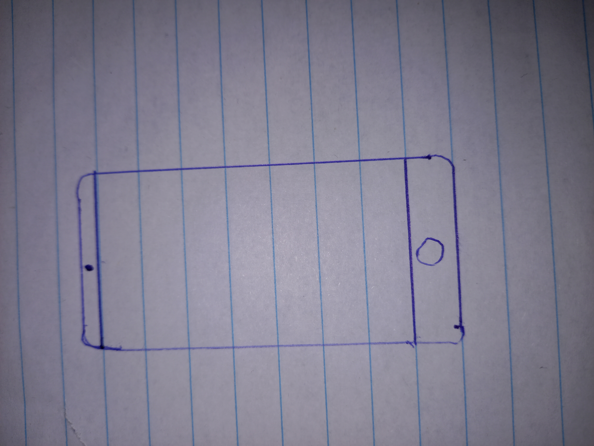
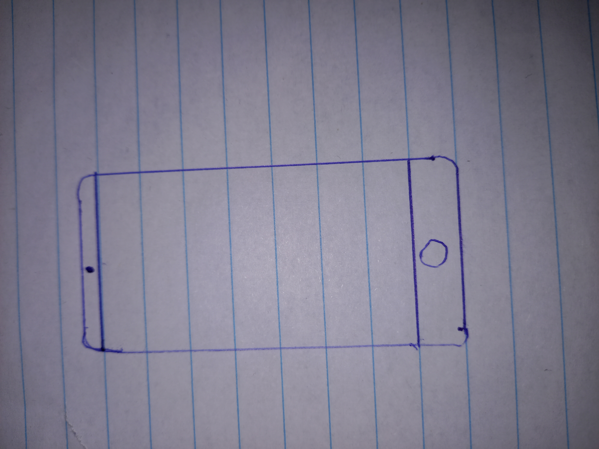

Het 3-lagenmodel is niet zo moeilijk, in dit geval gaan we het hebben over het 3-lagenmodel van een telefoon.
Dit zijn de 3 lagen van je telefoon:
Hardware: camera, GPS, batterij, touchscreen en geheugen
logische laag van software: Android, iOS
toepassingslaag van software: Apps
 
